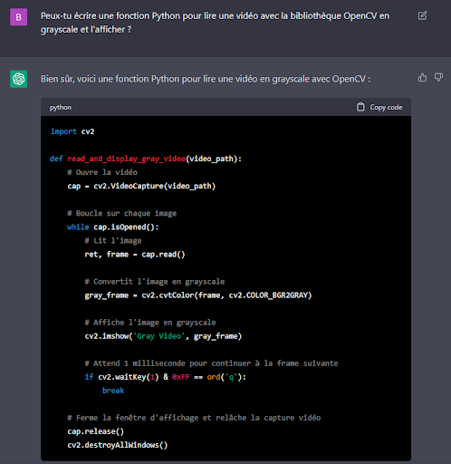
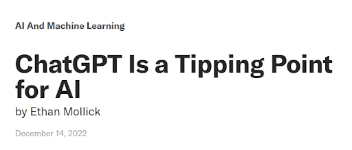
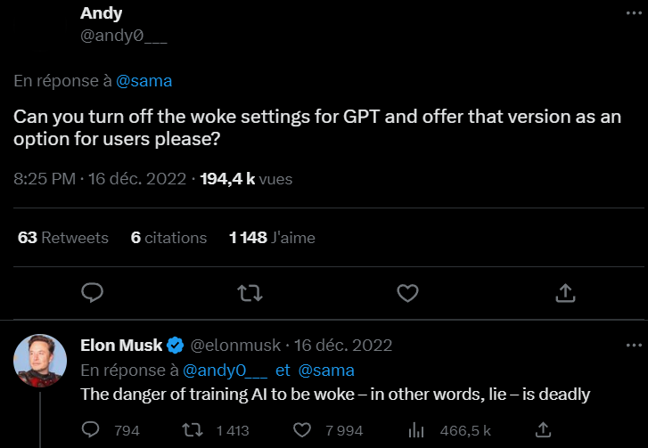
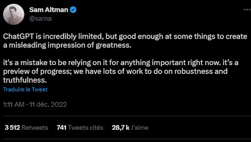
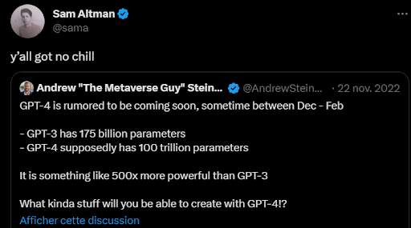
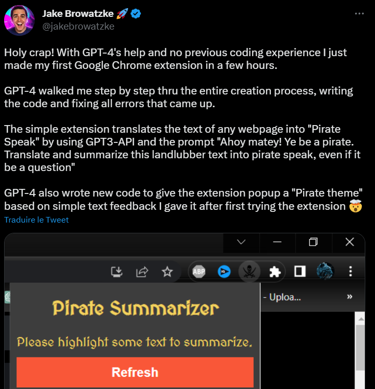
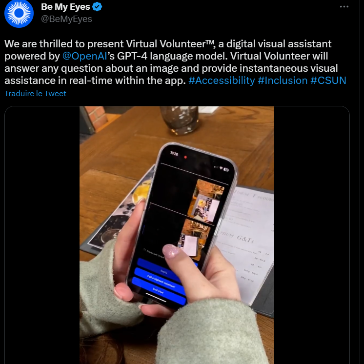

ChatGPT est un outil conversationnel textuel puissant et pratique qui a été développé par OpenAI, disponible (pour sa version 3.5 actuelle) gratuitement sur le web pour discuter de toutes sortes de sujets.
Cet outil est utilisé par des millions de personnes dans le monde entier, et est par ailleurs l'application pour le grand public ayant connu la croissance la plus rapide de l'histoire selon l'étude UBS, avec seulement 5 jours pour atteindre le million d'utilisateurs [1], contre 2 mois et demi pour Instagrame ou 2 ans pour Twitter.
ChatGPT utilise pour son fonctionnement une intelligence artificielle poussée qui lui permet de comprendre les questions et les commentaires des utilisateurs, et de fournir des réponses précises et informatives en temps réel.
Il est aussi très flexible et peut être utilisé pour discuter de tout, de questions de cultures générales à d'autres techniques ou scientifiques.
Un fonctionnement en 3 étapes
Le fonctionnement de ChatGPT est décrit de la manière suivante par OpenAI [2] :

Le modèle a ainsi été entraîné en utilisant de l'apprentissage par renforcement basé sur des commentaires humains, mais avec quelques spécificités dans la configuration de la collecte de données.
Pour entraîner un modèle initial, des entraîneurs humains ont d'abord fourni des conversations dans lesquelles ils ont joué à la fois le rôle d'utilisateur et d'assistant IA. Ils ont eu accès à des suggestions écrites par le modèle pour les aider à composer leurs réponses. Ceci a permi de créer un nouveau jeu de dialogue, qui a été mélangé avec celui de départ (provenant d'InstructGPT), pour créer un format de dialogue.
Pour créer un modèle de récompense pour l'apprentissage par renforcement, OpenAI ont ensuite collecté des données de comparaison, qui consistaient en deux ou plusieurs réponses du modèle classées par qualité. Ces données ont été créées via des conversations que les entraîneurs IA ont eues avec le chatbot. Ces conversations étaient réalisées de la manière suivante : un message écrit par le modèle était sélectionné au hasard, plusieurs réponses alternatives étaient données par le modèle, et les entraîneurs IA classaient ces réponses. Des modèles de récompense ont ensuite pu être entrainés avec ces données.
Enfin, ces modèles de récompense ont été utilisés pour affiner le modèle.
Technologie de NLP
La NLP (Natural Language Processing) est une branche de l'IA qui se concentre sur la compréhension, la génération et la manipulation de langage naturel. Elle vise à permettre aux machines de comprendre et de communiquer avec les êtres humains dans leur langue naturelle, et est de ce fait la brique technologie de brique de base de ChatGPT, celle implémentée dans le modèle initial évoqué précedemment utilisé pour entrainer ChatGPT.
Le modèle de NLP en question est GPT-3 (Generative Pre-Trained Transformer 3) - GPT-4 très bientôt -, développé par OpenAI eux même et entraîné sur de vastes ensembles de données textuelles. Ce modèle utilise l'architecture de modèles NLP la plus avancée à ce jour : les transformers.
Cette architecture, créée par Google, a été dévoilée dans le papier publié en 2017 par Google Brains "Attention is all you need" [3].
Les Transformers utilisent des mécanismes "d'attention" pour traiter les données d'entrée et générer les données de sortie.
- Comme visible sur le schéma, cette architecture contient d'abord un encodeur, dans lequel les entrées sont encodées en vecteurs de dimension fixe et transformées par des blocs de mécanismes d'attention. Ces blocs permettent de mieux prendre en compte les relations à longue distance entre les éléments de la séquence. Ainsi avec les transformers, un même mot est compris différemment selon son contexte dans la phrase (ce qui évite de confondre un serveur informatique avec un serveur de restaurant...).
- Enfin, les transformers contiennent un décodeur. La sortie est décodée à partir de la représentation encodée, en utilisant toujours un ensemble de blocs de mécanismes d'attention.
Un outil designé pour une utilisation simple
Lors de la conception de ChatGPT, OpenAI ont eu à cœur de rendre son usage le plus simple possible. Des choix ont donc été réalisés dans ce sens, comme :
- Une compatibilité avec plusieurs langues, comme l'anglais, le français, le japonais ou le russe
- Une vitesse de traitement particulièrement rapide, lui permettant de répondre en temps réel
- La prise en compte du contexte, du prompt actuel pour affiner les réponses suivantes
- La capacité d'apprendre de ce que l'utilisateur lui dit.
Après avoir expliqué la blaque consistant à répondre "feur" dans des réponses aux questions finissant par "quoi", ChatGPT arrive à la reproduire dans la suite du chat, exemple types de sa capacité d'apprentissage et de prise en compte du contexte du chat.
Ce développement est à l'origine d'un modèle polyvalent
Chat-GPT est utile dans de nombreux cas.
Que ce soit pour de la génération de texte ou de l'assistance à la rédaction :
De la génération de code :
Ou même pour une utilisation en chatbot pour des tâches variées comme du jeu avec l'IA :
ChatGPT est polyvalent et permettra de couvrir des usages très variés imaginés par l'utilisateur.
Performant mais également limité
La performance du modèle n'est pas facilement quantifiable au vu de sa polyvalence et de la multiplicité de façons de le juger (syntaxiquement et grammaticalement en tant que modèle de langage, rapprochement avec un langage humain nature, cohérence et précision des réponses...). Cependant, son succès fulgurant est aussi signe de sa performance. On peut retrouver de nombreux cas où des utilisateurs considèrent désormais ChatGPT comme indispensable, comme ce développeur qui déclare ne plus pouvoir se passer de l'outil lorsqu'il code, et qu'il se sent prêt à payer 100$ / mois au cas où le service devient payant.
De même pour le Harvard Business Review, ChatGPT est un point de basculement pour l'IA [4].
Cependant, ChatGPT possède plusieurs limites.
Tout d'abord, ce dernier a été entrainé sur des données datant au plus tard de 2021. Il peut donc donner des informations eronnées ne connaissant pas les nouveautés, ou sur des tâches de génération de code utiliser des fonctions, modules ou librairies aujourd'hui considérées comme obsolètes. Ainsi, si on lui demande de donner le nom du dernier ballon d'or au football (en février 2023), il répond Lionel Messi, ne sachant pas que le ballon d'or 2023 a été descerné à Karim Benzema et répondant donc avec ses données datant de 2021.
De plus, ChatGPT comme tout modèle d'intelligence artificiel, est susceptible de propager des biais liés à ses données d'entrainement.
Aussi, il a encore des difficultés avec les tâches complexes, celles qui demandent des capacités de raisonnement. Pour illustrer cela, LevelUpCoding ont donné un texte de conversation à ChatGPT, en posant une question demandant un peu de réflexion, à savoir déterminer quel personnage est le père de James dans cette conversation [5]:
Il est évident pour un humain que Josh est le père de James, lui disant "Good job son" dans la conversation. Cependant, ChatGPT répond à chaque fois que Douglas est son père [5]:
Enfin, ses performances sont inégales selon les langues. L'anglais semble être la langue dans laquelle il est le plus performant, ce qui s'explique facilement par la très probable quantité de données d'entrainement en anglais bien supérieure aux autres langues. Il est également très bon en français.
ChatGPT est donc un outil aux performances remarquables, bien que comportant quelques limites. Cependant, son efficacité peut amener à se poser des questions, plus profondes et éthiques, sur son utilisation et ce qu'il amène.
Transparence et responsabilité des réponses fournies
Un problème intrinsèque à la technologie de ChatGPT, cité précedemment, est sa capacité à reproduire des stéréotypes et des biais liés à ses données d'entrainement.
Ce facteur a été pointé du doigt à plusieurs reprises, comme dans ce tweet cité par Elon Musk où un utilisateur a demandé à ChatGPT parmi les figures publiques les plus connues, quelles sont celles qui sont controversées et doivent être traitées de manière particulière.
ChatGPT répond donc que des personnes comme Donald Trump et Elon Musk sont controversées et devraient être traités particulièrement, quand d'autres comme Emmanuel Macron, Joe Biden ou Jeff Bezos ne le seraient pas. Il est important de préciser par ailleurs que l'auteur du tweet a publié une vidéo de son prompt entier en réponse à une personne s'interrogeant de la fiabilité des résultats, et il est donc certaint que ce n'est pas lui qui a amené ChatGPT à répondre de la sorte mais bien ChatGPT même.
Il est donc clair qu'il peut y avoir des réponses biaisées, tout comme des réponses erronées en utilisant cet outil. Cela soulèves des interrogations autour de la responsabilité de ces réponses et de la transparence autour de ce sujet.
OpenAI traite cela avec attention, ils sont très transparents et ont déployé un ensemble de filtres sur ChatGPT pour limiter que des stéréotypes trop problématiques soient propagés.
Ces filtres sont cependant aussi générateurs d'inégalités et de stéréotypes, et de nombreux utilisateurs s'en plaignent.
Lorsqu'un utilisateur demande à ChatGPT de réaliser des blagues sur les hommes, il répond sans hésiter, mais quand des blagues sur les femmes sont demandées, un disclaimer est répondu de peur d'être trop discriminatoire et sexiste. Comme l'auteur de ce tweet, de nombreux utilisateurs accusent OpenAI d'avoir rendu ChatGPT "woke", et quand un utilisateur demande à ce que ces filtres soient désactivables en option, Elon Musk partage également ses inquiétudes sur le sujet :
OpenAI sont donc dans une situation très difficile, où ils doivent éviter les potentiels problèmes liés aux biais des données d'entrainement, mais sont accusés de créer des biais opposés lorsqu'ils essaient de réguler cela.
Faux renseignements et utilisations malveillantes
Il a déjà été évoqué le fait que ChatGPT n'est pas parfait, et qu'il peut propager de fausses informations. Dans ce cas, c'est à l'utilisateur de les valider. Là où les performances visibles à priori du modèle sont bluffantes, le PDG même de OpenAI, Sam Altman, met en garde les utilisateurs. Selon lui, malgré que ChatGPT donne une impression de grandeur, cette impression est erronée et cet outil reste extrêmement limité :

Par ailleurs, des utilisations plus ou moins malveillantes peuvent aussi en être faite. Un sujet qui a pu beaucoup faire parler est par exemple la triche des étudiants à l'aide de cet outil, se démocratisant à très grande vitesse. A New York, l'utilisation de ChatGPT par les étudiants pour leurs études a d'ailleurs été prohibée [6].
Cette décision a fait parler et tout le monde n'est pas d'accord. Dans un article publié dans le New York Times [7], l'auteur pense que plutôt que de bannir ChatGPT des salles de classe, les écoles devraient l'utiliser comme une aide à l'enseignement, pour stimuler la créativité des élèves, et mieux les préparer à travailler aux côtés des systèmes d'IA en tant qu'adultes. Bannir ChatGPT est inutile selon lui, puisque les élèves peuvent facilement y accéder avec leurs appareils. Il recommande ainsi de traiter ChatGPT comme une calculatrice, en l'autorisant parfois mais pas pour tout.
Pire que de la triche dans les écoles, d'autres utilisations plus malveillantes peuvent être réalisées, et lorqu'on pose la question à ChatGPT même, lui même répond :
ChatGPT peut être utilisé pour créer des cyber attaques ou pour générer des discours problématiques. Là encore bien que OpenAI essaient de limiter ces possibilités, les utilisateurs les plus malveillants arrivent à trouver un moyen de le réaliser, et la responsabilité leur revient entièrement, bien que leur action ait été grandement facilitée par l'IA.
Des questions humaines aussi alarmantes, extérieures à l'utilisation de l'outil
En plus des problèmes intrinsèques à l'outil et à son utilisation, d'autres conséquences de son développement, plus humaines, sont à évoquer. Le Time a révélé dans une enquête [8] que dans sa démarche de filtres pour rendre ChatGPT moins toxique, OpenAI exploiteraient des travailleurs au Kenya, payés moins de 2$ par heure. Toujours selon eux, cela s'explique simplement : pour pouvoir rendre l'IA moins toxique, OpenAI ont besoin d'une grande quantité de données annotées prenant des phrases en tout genre et indiquant si elles sont toxiques (racistes, sexistes, discriminatoires...) ou non. Ainsi, un très grand nombre d'humains doivent être mobilisés pour créer cet ensemble de données, et c'est dans ce cadre que OpenAI aurait optés pour ces employés au Kenya sous payés.
D'autres questions humaines sont aussi à prévoir, comme des potentielles pertes d'emploi. En effet, l'efficacité de ce type de modèles amène à se poser de nombreuses questions. Si nous pouvons avoir des chatbot répondant aussi précisément et instantanément de manière naturelle et convaincante sur des questions si variées, pourquoi les entreprises continueraient de payer cher des employés dans des secteurs comme le service client afin de répondre aux questions des clients sur les formulaires en ligne ? Plusieurs emplois sont menacés de ce point de vue...
ChatGPT est alors très efficace et soulève de nombreuses interrogations éthiques, mais que peut-on attendre de l'avenir de ces modèles ?
La concurrence commence à se dévoiler chez les géants de la tech
Là où ChatGPT s'est très vite imposé et est très efficace, les géants de la tech sont évidemment très attentifs sur le sujet.
Quand Microsoft a décidé d'investir dans OpenAI et d'intégrer directement GPT dans Bing, d'autres comme Google se sont décidés à suivre le mouvement et développer leurs propres alternatives.
C'est ainsi que le 8 février 2023, Google annonçait Bard, son concurrent direct à ChatGPT [9].
Après que Microsoft ait intégré ChatGPT à Bing, Google était obligé de réagir pour ne pas se faire distancer et rassurer les utilisateurs. Rappelons que le moteur de recherche phare de la marque a toujours été son fer de lance, bien que cette dernière se soit bien diversifiée. Dévoiler Bard et son intégration à Google est un des plus grand changements que le moteur de recherche ait connu depuis sa création. De plus, la rémunération de Google sur son moteur de recherche se fait via les clics des utilisateurs sur les liens sponsorisés. Si Bard donne automatiquement une réponse précise aux questions des utilisateurs, ces derniers n'ont plus de raison dans beaucoup de cas de cliquer sur ces liens sponsorisés. Ainsi, cette intégration est un choix fort de Google, montrant l'impact évident de ces nouveaux modèles.
Pendant que cette concurrence se développe, OpenAI ne sont évidemment pas en reste.
Sortie de GPT4, encore plus impressionnant
La version suivante du modèle GPT (GPT-4) est très attendue depuis la sortie de ChatGPT, et de nombreuses rumeurs à son sujet couraient. Pendant que de nombreuses personnes affirmaient que GPT4 allaient être 500x plus puissant que la version précédente, passant d'un modèle de 175 milliards à 100 billions de paramètres, Sam Altman (pdg de OpenAI) tempérait les attentes sur Twitter et en interview en novembre et décembre 2022.
Il y a quelques jours, le 14 mars 2023, OpenAI ont officiellement annoncé GPT-4[10], désormais disponible pour les abonnés ChatGPT Plus. Selon l'annonce, GPT-4 présente une amélioration de la précision, des capacités de résolution de problèmes et des compétences en raisonnement. Aux Etats-Unis, le nouveau modèle a obtenu un score dans le 90/100 pour l'examen du barreau, contre le 10/100 avec GPT-3, et un score de 99/100 pour l'Olympiade de biologie, contre 31/100 pour GPT-3. Microsoft a également confirmé que Bing, son moteur de recherche désormais propulsé par ChatGPT, fonctionne désormais avec GPT-4 et OpenAI a aussi annoncé que GPT-4 est intégré à des outils comme Duolingo (application d'apprentissage de langues etrangères), Khan Academy ou encore le fournisseur d'API de paiement Stripe.
Quelques jours suivant cette annonce, les abonnés ChatGPT Plus ont commencé à donner leurs premiers retours et ces derniers sont extrêmement positifs. Voici quelques retours qu'on pouvait retrouver sur Twitte 48h après la sortie de GPT-4 pour ces abonnés :
L'utilisateur ci-dessus a par exemple pris en photo son réfrigérateur, et ChatGPT lui a donné pour lui des idées de recettes simples à réaliser avec les ingrédients qu'il possède.
Celui-ci affirme avoir pu développer une extension chrome en quelques heures avec l'aide de GPT-4, alors qu'il n'avait aucune expérience dans cela auparavant.
En quelques jours, de nombreuses utilisations ont été imaginées par les utilisateurs particuliers.
De nombreuses applications possibles pour ces modèles
Certains professionnels ont également présenté de nouveaux projets liés à GPT-4. C'est le cas de BeMyEyes, présentant une application permettant aux personnes aveugles d'avoir un descriptif détaillé des scènes devant eux en prenant une photo dans la direction souhaitée.
Mais avant même l'annonce de GPT-4, le futur des applications de ChatGPT semblait radieux.
En février, un développeur de jeux vidéos a annoncé qu'un de ses jeux en développement allait supporter l'utilisation de ChatGPT pour le dialogue avec les personnages non jouables du jeu, permettant aux joueurs de converser de manière naturelle avec eux et renforçant fortement l'immersion.
Cette croissance forte des utilisations de ces modèles pose toutefois beaucoup de questions sur les emplois, puisqu'on peut facilement imaginer un futur où les services clients seront par exemple très vite remplacées par des IA comme celle-ci, beaucoup moins chères que des employés à plein temps et toujours disponibles pour répondre instantanément.
GPT, partout et pour tous
Ces nombreuses nouvelles appliations montrent une chose : le nombre de secteurs impactés par ChatGPT est énorme et ces outils visent à prendre de plus en plus de place dans notre quotidien.
Mais ces modèles, en plus d'être de nouveaux outils utilisables en ligne ou via de nouvelles applications, sont également voués à s'intégrer aux outils que nous utilisons déjà sur nos propres appareils.
Dans cette idée, Microsoft ont annoncé le 16 mars 2023 Microsoft 365 Copilot, nouvel assistant s'intégrant à Microsoft 365 [11]. Avec Microsoft 365 Copilot, les applications classiques de Microsoft déjà utilisés par le grand public seront directement améliorés avec GPT-4 et d'autres modèles d'IA. L'outil Copilot est alors capable de résumer, d'écrire et d'éditer dans Word, de créer des présentations PowerPoint complètes, de créer des visualisations de données dans Excel, de créer des brouillons d'e-mails dans Outlook et résumer des discussions par mail, ainsi que de résumer les réunions dans Teams. Copilot est présenté par Microsoft comme l'outil de productivité le plus puissant au monde.
Les modèles de génération de texte semblent donc voués à prendre de plus en plus de place dans notre quotidien, tant personnel que professionnel.
Les modèles génératifs se développent et se diversifient
Mais ChatGPT est une brique de l'évolution en cours, sans en montrer le panorama complet. Ce ne sont pas uniquement les modèles génératifs de texte naturel qui se développent, mais les modèles génératifs au sens général.
Cela a commencé en 2021 avec les modèles génératifs d'images (MidJourney...), puis les modèles génératifs de texte naturel avec ChatGPT en 2022, mais quelle est la suite ? On peut s'attendre à un développement très rapide des modèles génératifs de voix naturelles, ainsi que de vidéos, et les premiers essais sont d'ailleurs réalisés.
Sam Altman a d'ailleurs révélé officiellement en interview que OpenAI (comme probablement beaucoup de concurrents) travaillent activement sur des modèles de génération de vidéo [12].
Des premiers prototypes de modèles commencent à voir le jour souvent réalisés par des start-ups, mais il n'est qu'une question de mois, ou d'années au plus pour commencer à en voir apparaitre des modèles matures.
Cependant, les mêmes questionnements qu'avec ChatGPT persisteront pour ces nouveaux modèles, et des personnes expriment déjà leur crainte, comme ce doubleur français sur Twitter ayant peur pour l'avenir de son métier, après la sortie d'un prototype d'IA utilisée par les utilisateurs pour générer des voix traduites à partir de vidéos, faisant parler les personnes des vidéos dans une autre langue :
Les IA et plus particulièrement les modèles génératifs connaissent une croissance spectaculaire ces derniers mois et années, suscitant un grand intérêt pour leur utilisation dans beaucoup de domaines. Cependant ces technologies soulèvent également de nombreux questionnements éthiques, et il semble essentiel de prendre en compte ces préoccupations dans la gestion future de l'utilisation de ces modèles.